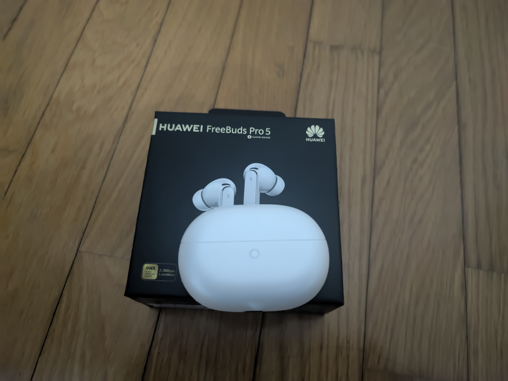
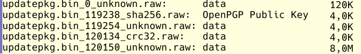
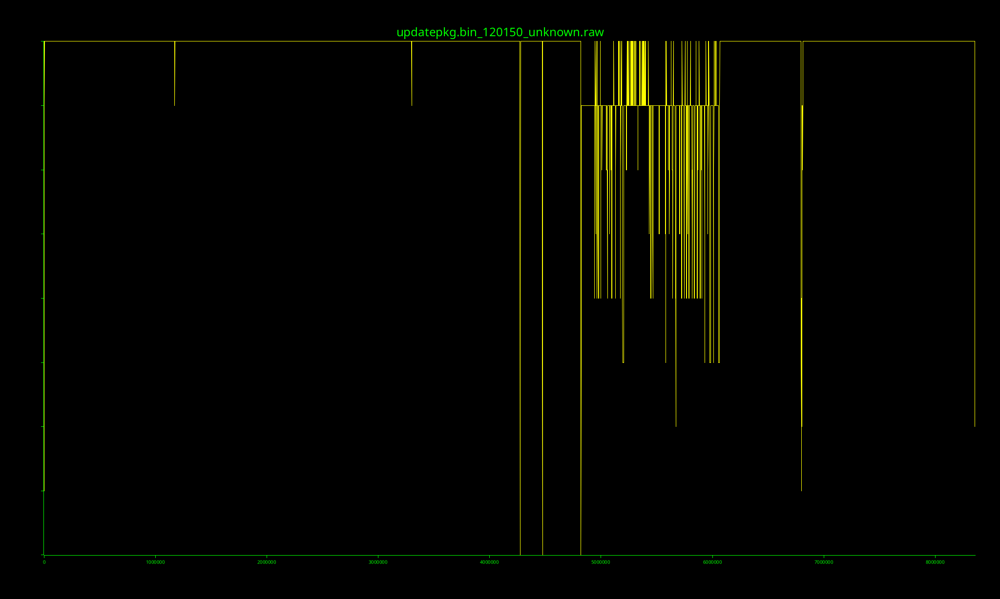

How I've got Huawei FreeBuds Pro 5 Firmware
May 21, 2026
I recently graduated and my wonderful friends gifted me a pair of new earbuds Huawei FreeBuds Pro 5. As a technical enthusiast, I decided I want to look at the firmware they implemented. Since manufacturers don't exactly post these binary files on their homepage, I knew I had to extract it directly from the update process triggered by the companion app.
The MITM attack
My first thought was to perform a simple Man-In-The-Middle (MITM) attack. I fired up mitmproxy on my computer and routed my Android phone's network traffic through it. The goal was to sniff the exact URL the Huawei Audio Connect app uses to download the firmware.
However, upon opening the app, the update request completely failed. The app was performing certificate validation, realizing my mitmproxy certificate wasn't the official Huawei one, and aggressively dropping the connection.
Digging into the APK
To bypass this, I needed to modify the app to trust my proxy. I grabbed the Huawei Audio Connect 2.0.3.350 APK and decompiled it using apktool.
Poking around the extracted files, I managed to find the root CA certificate the application used. I immediately swapped it out with my own mitmproxy CA certificate, recompiled the app, signed it and installed it on my device.
I confidently opened the app... and the connection still failed. I knew I had to dive deeper.
Jadx-GUI
I returned to the APK file, this time I used Jadx-GUI to analyze the Java source code directly. After tracing the network request lifecycle, I discovered the culprit: a double check hardcoded into the application logic.
Even if the root certificate matched the one in the assets folder, the app explicitly verified that the certificate's owner name strictly contained the string "Huawei". Since my mitmproxy certificate was issued by "mitmproxy", it was triggering a security exception.
Patching Smali
Armed with this knowledge, I went back to my apktool output. I located the corresponding Smali file handling the SSL validation and surgically removed the conditional jump that enforced the "Huawei" name check.
I recompiled the APK one last time, installed it, and crossed my fingers.
The app connected to the server!
Having this system appropriately set up, I triggered the firmware update check. A JSON payload containing device info was sent to the server and, right after it, the server replied with the download URL for the earbuds.
Time to analyze!
Since the payload was a zip archive, I started extracting the content: it was composed by some metadata plus the firmware binary file itself.
Extracting the firmware package using binwalk --carve, four files were extracted, I've run the commands file and du -sh to analyze them and this is the output.

From this perspective, the outstanding files are the first two and the last one: the strings command on updatepkg.bin_0_unknown.raw confirms its unencrypted nature, most of the output words are in plain English language. Trying to reverse-engineering it with Ghidra and setting the CPU variant to ARMv8T (32 bit, little endian), some functions pop out, so apparently the buds work on ARM cpu!
The file updatepkg.bin_119238_sha256.raw appears to be the only one with a recognized type: OpenPGP Public Key, but unfortunately I could import it using standard gpg --import.
The last file, updatepkg.bin_120150_unknown.raw, seems to be the firmware itself, almost entirely encrypted of course!

To be continued...
The next phase of this project involves reverse-engineering the decryption mechanism to analyze the main payload.